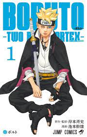

SNOPSE DA OBRA
Boruto: Two Blue Vortex é a continuação direta de Boruto: Naruto Next Generations, que chegou ao fim no capítulo 80, volume 20. Na prática, Two Blue Vortex representa, para Boruto, o que Naruto Shippuden representou para Naruto. É uma história que sucede um salto temporal de três anos.